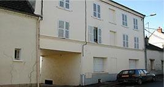

|
La Résidence sociale de Quincy-Voisins |
 |
|
Mardi, 14 Décembre 2010 14:28 |
|  |
Cet hébergement se situe 29 rue Carnot 77860 QUINCY-VOISINS.
Il s'agit d'un petit bâtiment de deux étages composé de six studios chacun muni d'un coin cuisine, d'un bureau, d'une buanderie et d'une pièce commune.
La population accueillie est encadrée par toute une équipe éducative.
Les jeunes adultes, âgés de 18 à 20 ans, présentent une déficience intellectuelle légère, associée ou non à des troubles du comportement.
|
|
 |
|
|
Mise à jour le Jeudi, 08 Septembre 2011 11:21 |